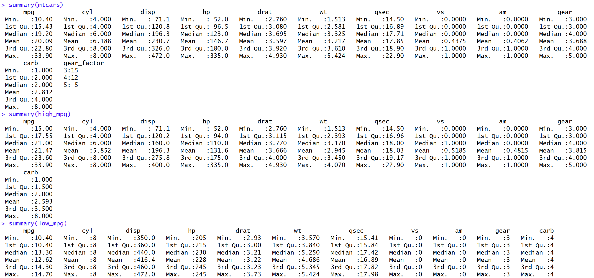
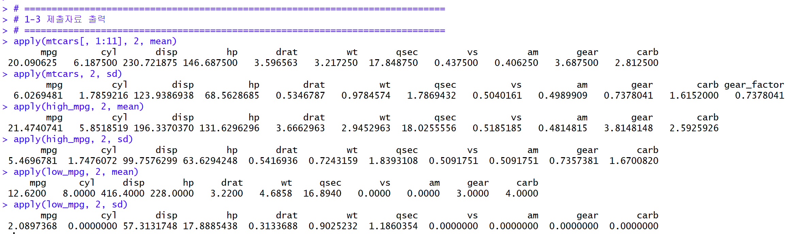
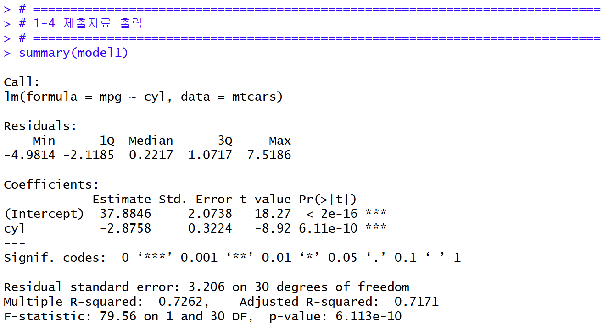
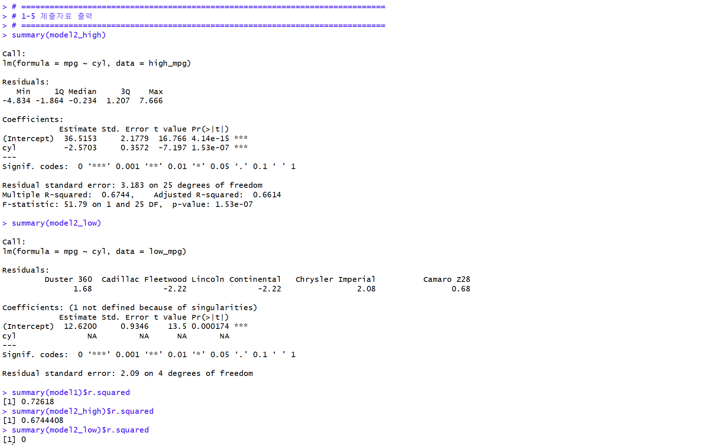
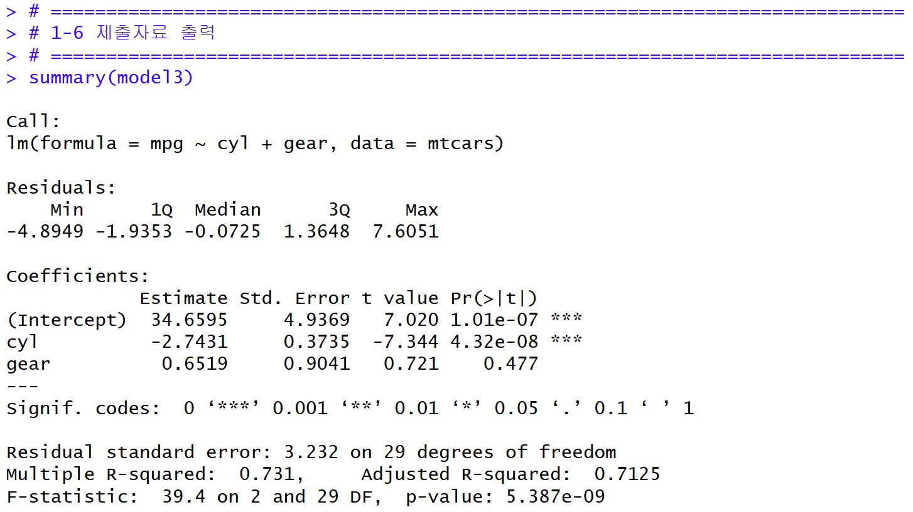
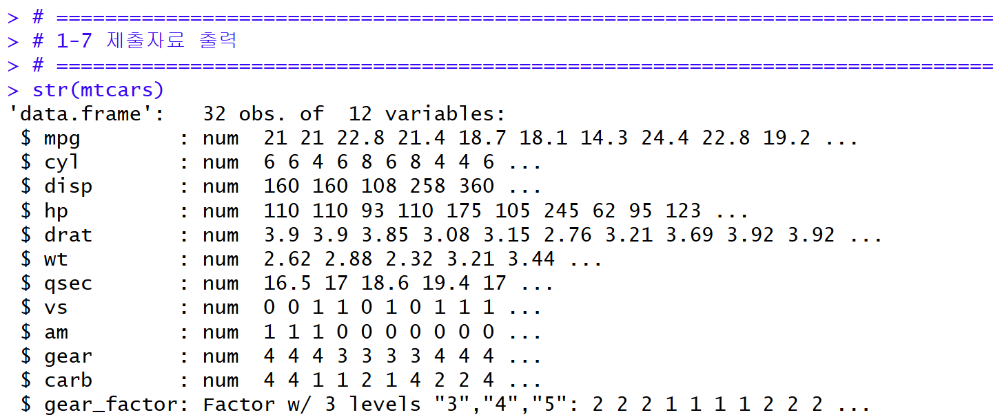
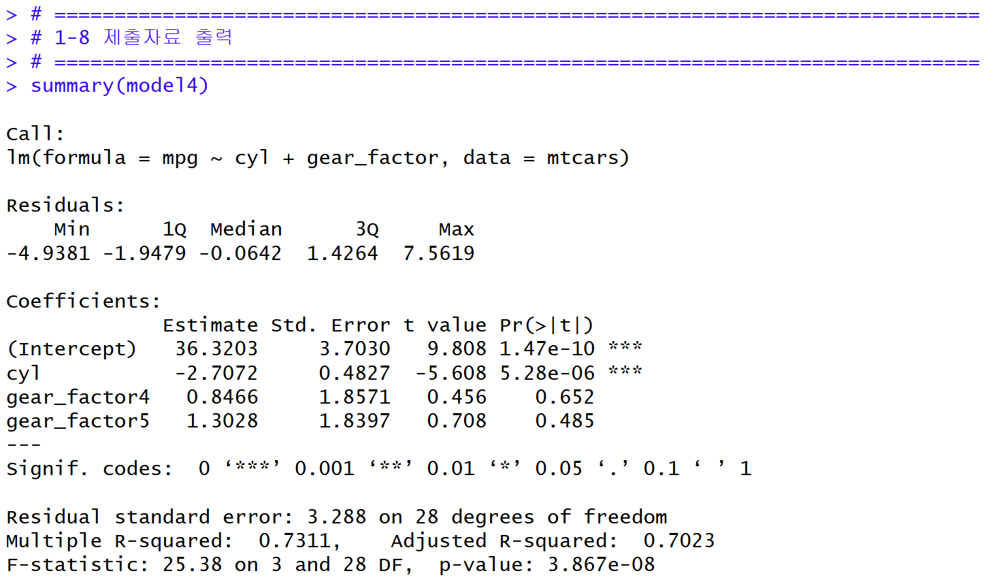
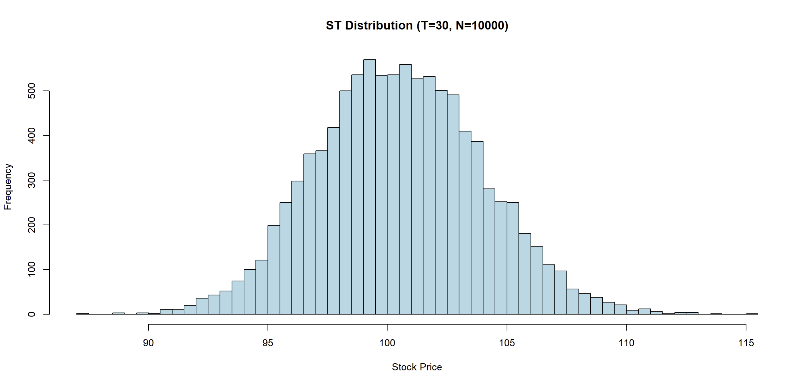

R 데이터 분석 (Homework 2)
dplyr·선형 회귀와 시뮬레이션을 활용한 데이터 분석 과제
한양대학교 ERICA 스마트융합공학부 스마트ICT융합전공
AI+X: R-Py컴퓨팅 · Homework 2
AI+X: R-Py컴퓨팅 · Homework 2
R
dplyr
Linear Regression
Simulation
개인 과제
About Project
R을 활용한 데이터 분석 과제입니다. PART 1에서는 mtcars 데이터에 대해
dplyr로 그룹을 나누고 요약 통계량과 선형 회귀 모형을 추정하며 수치형·팩터형 변수의
회귀 차이를 비교했습니다. PART 2에서는 기하 브라운 운동(GBM)을 활용한 주가 경로
시뮬레이션으로 통계 시뮬레이션 기법을 다뤘습니다.
다룬 내용
- 요약 통계량 · mtcars / high_mpg / low_mpg 그룹별 summary
- apply 활용 · 변수별 평균·표준편차 계산 및 summary 결과와 일치 검증
- 선형 회귀 · mpg ~ cyl, mpg ~ cyl + gear 모형 추정 및 R² 비교
- 팩터형 회귀 · gear_factor 더미변수화로 수치형 vs 팩터형 회귀 차이 분석
- 시뮬레이션 · 기하 브라운 운동으로 10,000개 주가 경로 생성 (S0=100, σ=0.1, rf=0.04)
Results
과제 수행 결과입니다.

1-2 · 그룹별 요약 통계량 (summary)

1-3 · apply 기반 평균·표준편차

1-4 · 선형 회귀 (mpg ~ cyl)

1-5 · 그룹별 회귀 및 R² 비교

1-6 · 선형 회귀 (mpg ~ cyl + gear)

1-7 · gear_factor 팩터형 변수 생성

1-8 · 팩터형 회귀 (mpg ~ cyl + gear_factor)

PART 2 · 기하 브라운 운동 주가 경로 시뮬레이션
Key Findings
| 항목 | 결과 |
|---|---|
| R² 비교 | mtcars 0.7262 · high_mpg 0.6744 · low_mpg 0 — mtcars 예측력 최상 |
| 수치형 vs 팩터형 | 수치형은 계수 1개로 선형 가정, 팩터형은 기준수준 대비 수준별 효과를 더미로 추정 |
| 시뮬레이션 결과 | ST 평균 100.5158 · ST 분산 11.9474 |